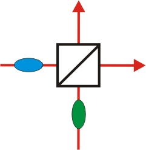
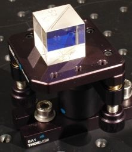

The demonstration experiment on HOMI was sponsored by the Robert Bosch Stiftung.
Hong-Ou-Mandel Interference
Overview
Hong-Ou-Mandel Interference (HOMI) is a quantum phenomenon which was first observed experimentally by the scientists Hong, Ou and Mandel in 1987 [Hon87]. For the experiment, a symmetric beam splitter cube is needed where half the incident light is transmitted, while the other half is reflected. This symmetric division ratio changes fundamentally, however, in the quantum world. The Hong-Ou-Mandel interference becomes apparent when two single quantum objects hit the beam splitter cube indistinguishably. The Hong-Ou-Mandel dip is used e. g. for quantum teleportation [Urs04].
Chapter 1: Possibilities at the beam splitter and indistinguishability of photons Chapter 2: Execution of the experiment
 |
 |
Which possibilities do two photons have at the beam splitter?
The demonstration experiment on HOMI was sponsored by the Robert Bosch Stiftung.